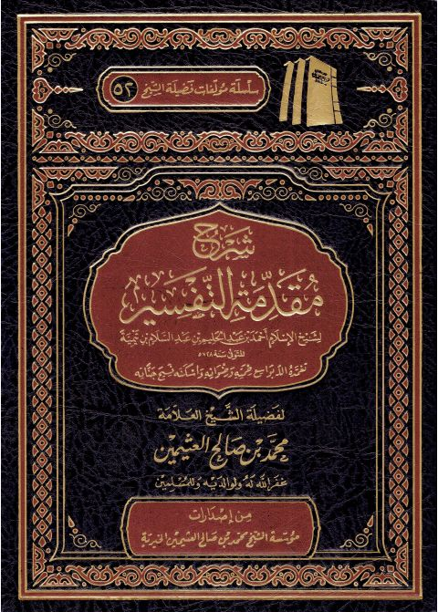

شرح مقدمة التفسير لشيخ الإسلام ابن تيمية
Authors: محمد بن صالح العثيمين
Publishers: مؤسسة الشيخ محمد بن صالح العثيمين الخيرية
Download Downloads need an internet connection.
- Published
- 1443هـ 2022م
- Country
- القصيم، السعودية
- Edition
- 7
- Volumes
- 1
- Pages
- 161
- Type
- كتاب
- Category
- التفسير وعلوم القرآن
Description
▫️ العنوان: شرح مقدمة التفسير لشيخ الإسلام ابن تيمية ▪️ المؤلف: #محمد_صالح_العثيمين ▫️ الناشر: #مؤسسة_الشيخ_محمد_بن_صالح_العثيمين_الخيرية ▪️ تاريخ النشر: 1443هـ 2022م ▫️ بلد النشر: القصيم، #السعودية ▪️ الطبعة: 7 ▫️ عدد الأجزاء: 1 ▪️ الصفحات: 161 ▫️ نوع الوعاء: #كتاب ▪️ التصنيف الرئيسي: #التفسير_وعلوم_القرآن ۪